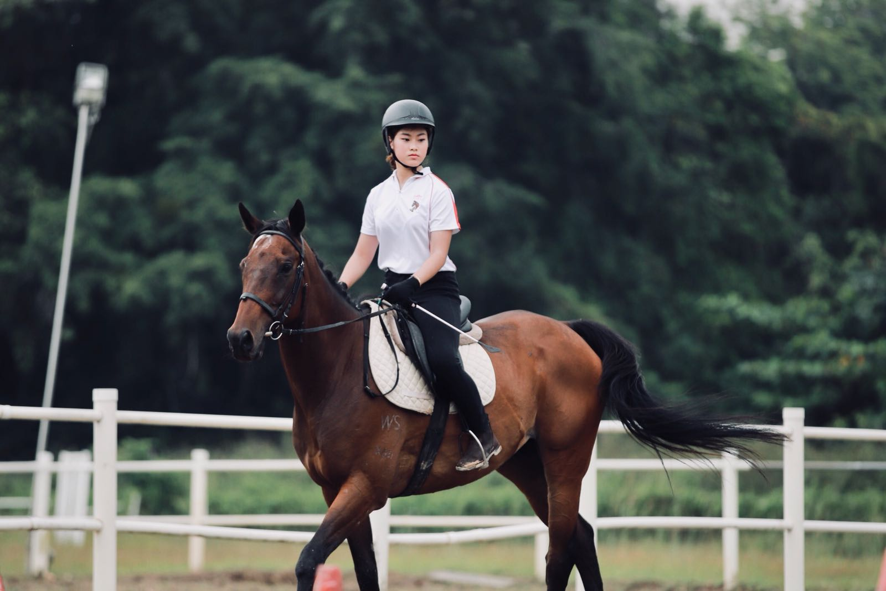
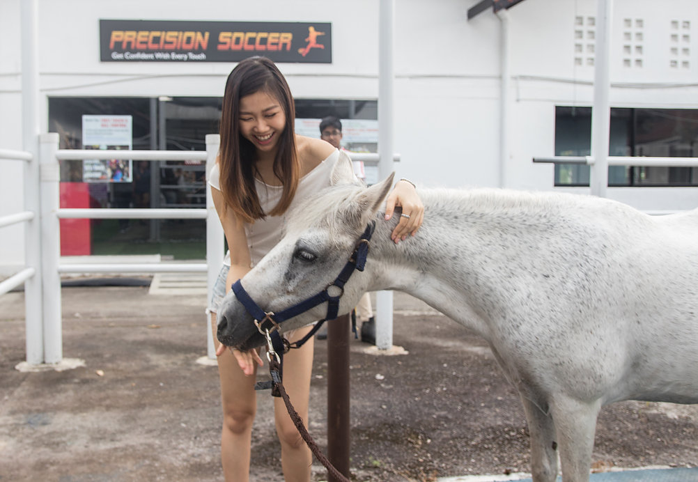
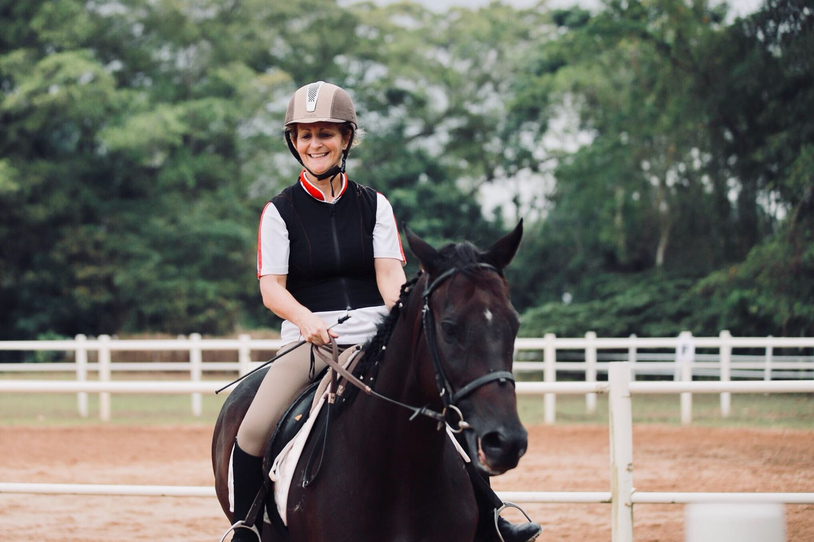
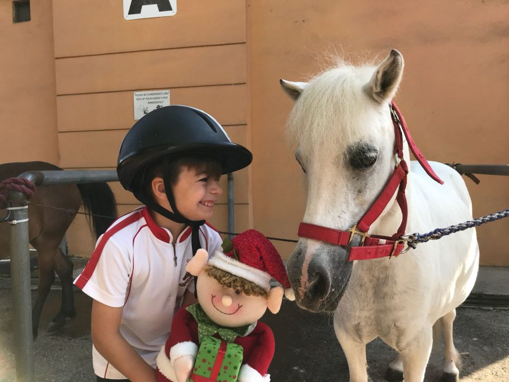
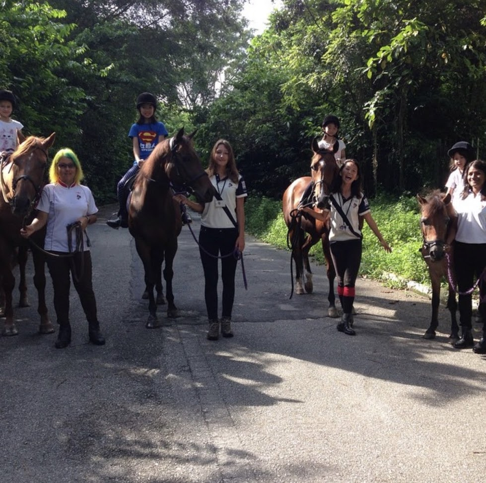

Horse Activities
A family haven of horsey activities
Pony rides, trail rides, bunny feeding, art corners and workshops for wide-eyed kids and grown-ups too.
What we offer
Stable moments for every guest
Gallop Jackuda brings families, friends and colleagues together to bond and celebrate in the gentle company of horses.
- Pony and horse rides
- Carriage rides
- Pony and bunny feeding
- Birthday parties
- Half-day stable tour and half-day stable tour with pony ride
- Team building - The Horse Way
- Trail rides for experienced and inexperienced riders
- Weekend camps, riding workshops, photo shoots and outside events

Walk-in activities
Available by location
Tickets can be purchased over the counter in person. Please contact the respective branch before heading down, as operating hours may change due to weather conditions or private event bookings.
Gallop Stable @ Admiralty Rd E
Address: 8 Admiralty Rd East, S759991
Parking: Available at St Helena Road
Phone: 6463 6012 / 8383 6425
Daily: 8:30 AM - 11:45 AM | 2:30 PM - 6:45 PM
- Pony Rides - $15 per ticket, approx. 3 to 5 mins
- Horse Rides - $20 per ticket, approx. 3 to 5 mins
- Pony Feeding - $2 per packet
- Arts & Crafts Activities - from $6 onwards
Gallop Stable @ Pasir Ris Park
Address: 61 Pasir Ris Green, Pasir Ris Park Carpark C, S518225
Phone: 6583 9665
Tuesdays - Sundays: 10:00 AM - 11:45 AM | 2:00 PM - 6:45 PM
- Pony Rides - $10 per ticket, approx. 3 to 5 mins
- Horse Rides - $15 per ticket
- Pony Feeding - $2 per packet
- Arts & Crafts Activities - from $6 onwards
Gallop Stable @ D'Resort
Address: 1 Pasir Ris Close, S519599
Parking: Available at D'Resort
Phone: 8787 5377
Wednesdays - Mondays: 9:00 AM - 11:45 AM | 2:00 PM - 6:45 PM
- Pony Rides - $10 per ticket, approx. 2 to 3 mins
- Pony Feeding - $2 to $5
- Arts & Crafts Activities - from $12 onwards
Brochure activities
Choose your stable experience
Gallop Stable offers a wide range of riding and horse-related activities for families, riders, groups and events.
Pony & horse rides
Introductory riding experiences and lesson pathways for different rider levels.
Carriage rides
A relaxed stable activity for guests who want a memorable horse experience.
Pony & bunny feeding
Family-friendly animal feeding experiences at the stable.
Birthday parties
Celebrate with ponies, horses and stable activities.
Stable tours
Half-day stable tours, including options with pony rides.
Team building
The Horse Way group activity for teams and organisations.
Weekend camps
2 days/1 night pony weekend camps and 3 days/2 nights outback campfire weekends.
Photo shoots
Photoshoots and videoshoots with horses in a stable setting.
Outside events
Hire ponies or horses for external events by arrangement.
Art corners
Creative corners and workshops designed for expressive, family-friendly stable days.
Pony grooming
Hands-on pony grooming sessions for guests who want to learn and bond gently.
Experience it in pictures


